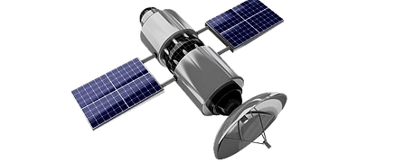
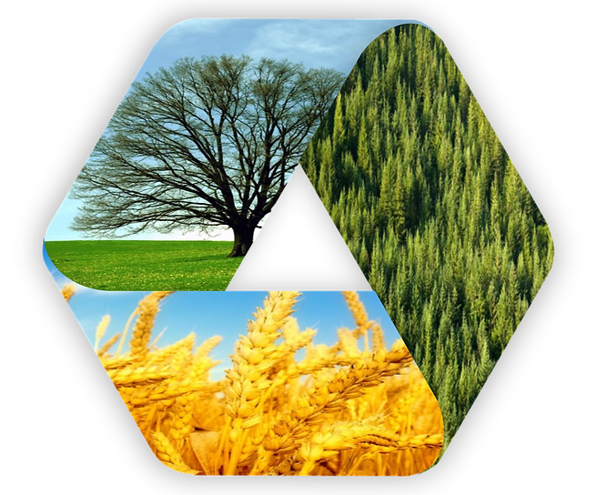
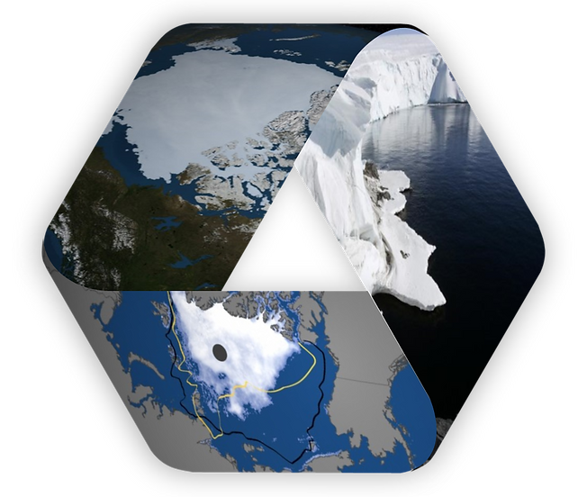
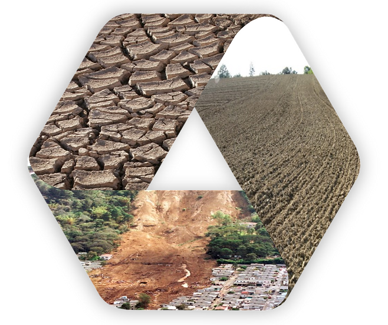
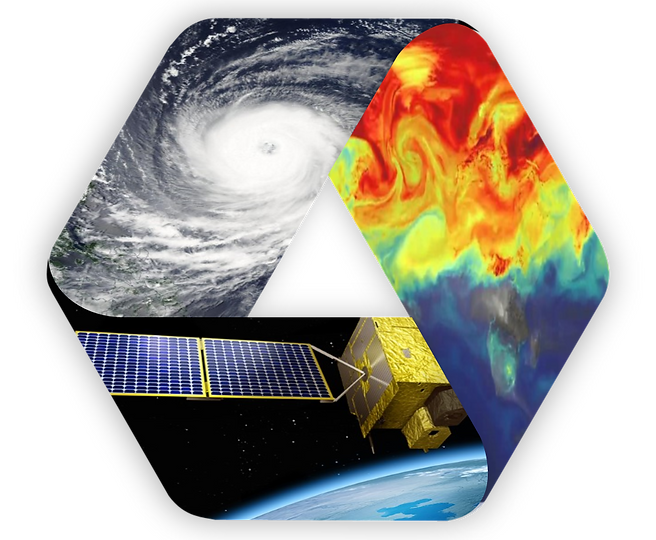
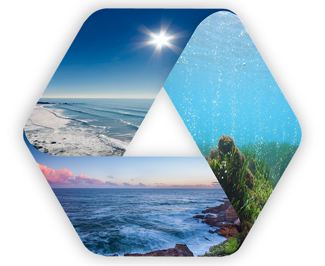

RESEARCH
Research of




Disaster Monitoring and Assessment
Terrestrial Ecosystems
Polar Remote Sensing
-
Sea ice/glacier monitoring
-
Sea ice thickness estimation
-
Short-term prediction of sea ice concentrations
-
Drought monitoring and prediction
-
Quantification of soil moisture and evapotranspiration
-
Heat wave and cold wave
-
Ground-level PM monitoring
-
Satellite-based GPP/NPP estimation
-
Forest monitoring/deforestation
-
Phenology of agricultural land


Meteorological / Atmospheric
Remote Sensing
Water Monitoring and Assessment
-
Algorithm development for GK-2A/GK-2B
-
Remote sensing of tropical cyclones
-
Remote sensing of air quality
-
Satellite-based coastal water quality estimation
-
Satellite-based carbon flux estimation
-
Sea fog monitoring and prediction
-
Remote sensing of sea surface salinity